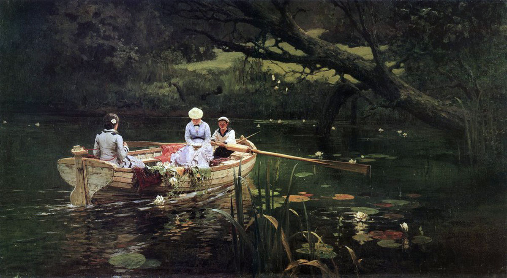
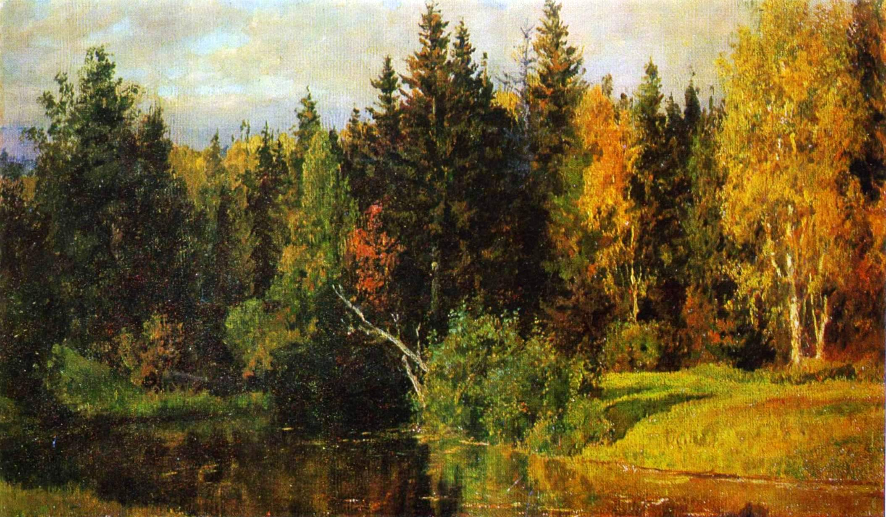
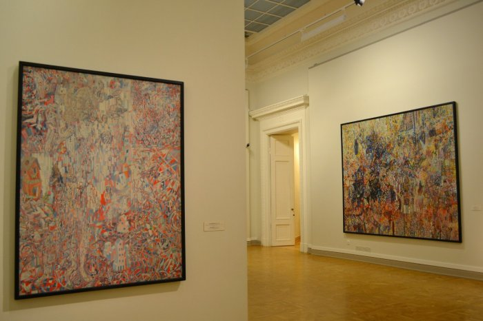
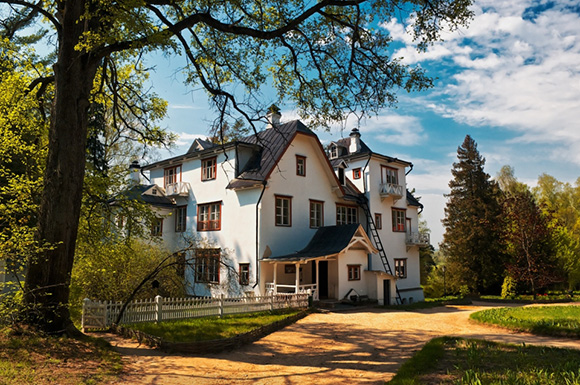

Речка Оять
С раннего детства Поленову прививалась глубокая любовь к природе.

Горелый лес
Своеобразие художника, его личности было во многом связано с той средой, в которой он сформировался.

Призраки Эллады
Поленов имел незаурядный дар архитектора, музыканта и композитора, был талантливым педагогом, театральным и общественным деятелем.

О Жудожнике




Как можно с нами связаться
Ярославль
8-800-555-35-35
Ярославль
help@polenov.ru
Ярославль
Красная площадь дом 2